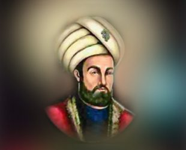

Ali Kuşçu
Türk-İslam Dünyası astronomi ve matematik alimleri arasında, ortaya koyduğu eserleriyle haklı bir şöhrete sahip Ali Kuşçu, Osmanlı Türklerinde, astronominin önde gelen bilgini sayılır. "Batı ve Doğu Bilim dünyası onu 15. yüzyılda yetişen müstesna bir alim olarak tanır." Öyle ki; müsteşrik W. Barlhold, Ali Kuşcu'yu "On Beşinci Yüzyıl Batlamyos'u" olarak adlandırmıştır. Babası, Uluğ Bey'in kuşcu başısı (doğancıbaşı) idi. Kuşçu soyadı babasından gelmektedir. Asıl adı Ali Bin Muhammet'tir. Doğum yeri Maveraünnehir bölgesi olduğu ileri sürülmüşse de, adı geçen bölgenin hangi şehrinde ve hangi yılda doğduğu kesinlikle bilinmektedir.
Ancak doğum şehri Semerkant, doğum yılının ise 15. yüzyılın ilk dörtte biri içerisinde olduğu kabul edilmektedir. 16 Aralık 1474 (h. 7 Şaban 879) tarihinde İstanbul'da ölmüş olup, mezarı Eyüp Sultan Türbesi hareminde bulunmaktadır. Ölüm tarihi; torunu meşhur astronom Mirim Çelebi'nin (ölümü, Edirne 1525) Fransça yazdığı bir eserin incelenmesi sonucu anlaşılmıştır. Mezar yerinin 1819 yılına kadar belirli olduğu ve hüsnü muhafazasının yapıldığı; ancak 1819 yılından sonra, Ali Kuşcu'ya ait mezarın yerine, zamanının nüfuzlu bir devlet adamının mezar taşının konmuş olduğu anlaşılmaktadır. Uluğ Bey'in Horasan ve Maveraünnehir hükümdarlığı sırasında, Semerkant'ta ilk ve dini öğrenimini tamamlamıştır. Küçük yaşta iken astronomi ve matematiğe geniş ilgi duymuştur.
Devrinin en büyük bilginlerinden; Uluğ Bey , Bursalı Kadızade Rumi, Gıyaseddün Cemşid ve Mu'in al-Din el-Kaşi'den astronomi ve matematik dersi almıştır. Önce,Uluğ Bey, tarafından 1421 yılında kurulan Semerkant Rasathanesi ilk müdürü, Gıyaseddün Cemşid'in, kısa süre sonra da Rasathanenin ikinci müdürü Kadızade Rumi'nin ölümü üzerine, Uluğ Bey Rasathane-ye müdür olarak Ali Kuşcu'yu görevlendirmiştir. Uluğ Bey Ziyc'inin tamamlanmasında büyük emeği geçmiştir. Nasirüddün Tusi'nin Tecrid-ül Kelam adlı eserine yazdığı şerh, bu konuda da gayret ve başarısının en güzel delilini teşkil etmektedir. Ebu Said Han'a ithaf edilen bu şerh, Ali Kuşcu'nun ilk şöhretinin duyulmasına neden olmuştur. Kaynakların değerlendirilmesi sonucu anlaşılmaktadır ki; Ali Kuşcu yalnız telih eseriyle değil, talim ve irşadıyle devrini aşan bir bilgin olarak tanınmaktadır. Öyle ki; telif eserlerinin dışında, torunu Mirim Çelebi, Hoca Sinan Paşa ve Molla Lütfi (Sarı Lütfi) gibi astronomların da yetişmesine sebep olmuştur. Bu bilginlerle beraber, Ali Kuşcu'yu eski astronominin en büyük bilginlerinden birisi olarak belirtebiliriz.
Ali Kuşçu'nun Eserleri
Ali Kuşcu'nun özellikle, matematik ve astronomi ile ilgili eserleri, gerçek ilmi kişiliğini ortaya koymaktadır. Bu eserlerinin adları şunlardır;
• Risale-i fi'l Hey'e (Astronomi Risalesi)
• Risale-i fi'l Fehiye (Fetih Risalesi)
• Risale-i Hisap (Aritmetik Risalesi)
• Risale-i Muhammediye (Cebir ve Hesap konularından bahseder)
• Tecrid'ül Kelam (Sözün Tecridi)
• Risale-i Adudiye Unkud-üz zvehir fi Man-ül Cevahir (Mücevherlerin Dizilmesinde Görülen Salkım) Vaaz İstiarad.